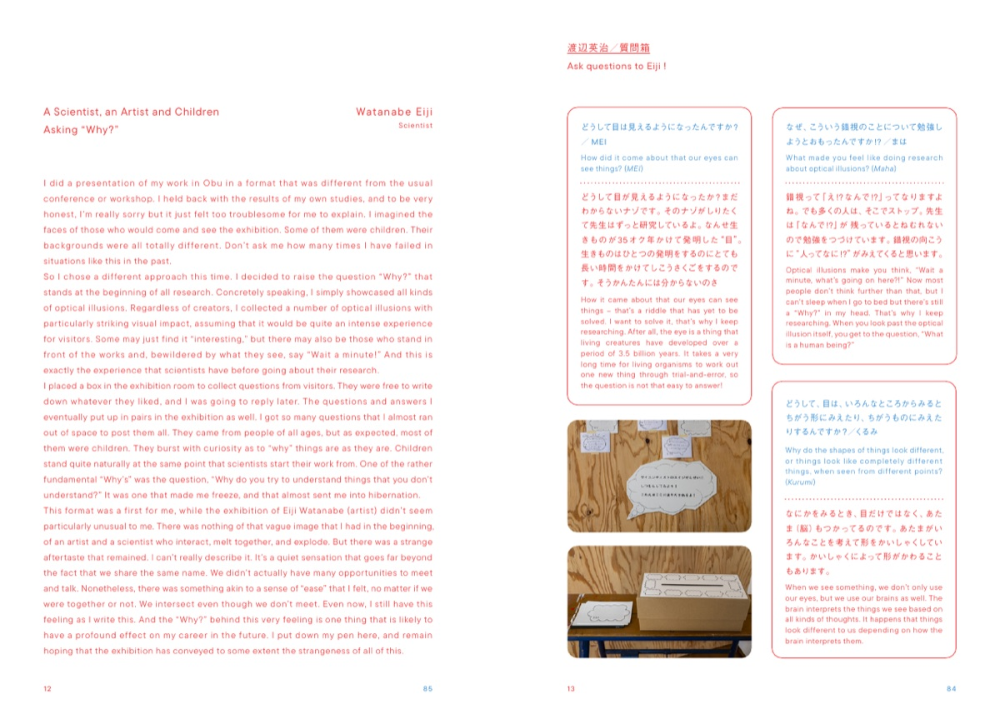

Catalogue of Art Obulist 2025 Eiji Watanabe Exhibition “Morning Monsters / W Eiji”Art Obulist 2025 ワタナベエイジ展「Morning Monsters / W Eiji」カタログ
The contributed texts, the transcript of the talk, and the full biographies and lists of papers that are not on this site can be read in the catalogue.

| Title | Art Obulist 2025 Eiji Watanabe Exhibition “Morning Monsters / W Eiji” |
|---|---|
| Published by | Art Obulist Executive Committee, March 31, 2026 |
| Format | A5, 100 pages, fully bilingual (Japanese and English). The neuroscientist’s chapter is read from the front cover and the artist’s from the back cover; the two meet in the middle |
| Editors | Satsuki Yamamoto, Emi Hirano |
| Design | Naoko Mizota |
| Photography | Kenji Aoki, Satsuki Yamamoto, Emi Hirano |
| Translation | Andreas Stuhlmann (texts pp.19–24, 31–32, 34–36, 40–41, 43, 45–48), Adam Simmonds (texts pp.02, 63–67, 72–85, 95) |
| English proofreading | Adam Simmonds |
| Printing | GRAPHIC Corporation |
A book read from both ends両側から読む本
Open it from the front cover and you are in the chapter of Eiji Watanabe (neuroscientist): horizontal text in vermilion, with vermilion page numbers counted from the front on the left-hand pages. Open it from the back cover and you are in the chapter of Eiji Watanabe (artist): vertical text in blue, with blue page numbers counted from the back on the right-hand pages. The two chapters meet in the middle, where the mayor’s message, the exhibition report, the related events, the acknowledgments, the contributed texts and the talk are set in green. Every spread carries both a vermilion and a blue number, and their sum is always 97.
- Eiji Watanabe, Scientist渡辺英治03–22
- Text: “A Scientist, an Artist and Children Asking ‘Why?’”テキスト「科学者と芸術家と子供の『なぜ』」11
- Questions質問箱13
- List of Works展示リスト16
- Profile経歴20
- Mayor’s Message: “On the occasion of Art Obulist 2025” (Hideto Okamura)市長挨拶「アートオブリスト2025開催に寄せて」24
- Exhibition Report (Emi Hirano)展覧会後記26
- Exhibition-related Events展覧会関連行事30
- Texts: Artist Talk “We Two are Tacticians”アーティストトーク「ふたりは策士」36
- Critique / Satsuki Yamamoto, “The Water’s Edge of Ordinariness in Art and Illusion”山本さつき「あたりまえの汀（みぎわ）」46
- Contributed article / Hidehiko Komatsu, “Circuits and Constellations”小松英彦「回路とコンステレーション」53
- Contributed article / Masaki Watabe, “Dissolving Science and Art”渡部匡己「溶解する科学と芸術」55
- Contributed article / Masahiko Haito, “Memories Of Eiji”拝戸雅彦「英司の思い出」58
- Eiji Watanabe, Artist (counted from the back cover in blue as 03–32)渡辺英司65–94
- Text (English translation)65
- Profile (English translation)67
- Profile経歴72
- List of Works展示リスト78
- Text: “Text for the Morning Monsters W EIJI exhibition”テキスト「Morning Monsters / W Eiji 展によせて」80
The numbers are the vermilion pages counted from the neuroscientist’s side. The artist’s chapter is also numbered in blue from the back cover (97 minus the vermilion number); the catalogue’s contents page lists both.
Texts寄稿
- Satsuki Yamamoto (curator)
- Critique, “The Water’s Edge of Ordinariness in Art and Illusion”
- Eiji Watanabe (artist)
- “Text for the Morning Monsters W EIJI exhibition” (“Misokaibashi / What’s the miso”)
- Eiji Watanabe (neuroscientist)
- “A Scientist, an Artist and Children Asking ‘Why?’”
- Hidehiko Komatsu (neuroscientist)
- “Circuits and Constellations”
- Masaki Watabe (physicist)
- “Dissolving Science and Art”
- Masahiko Haito (curator)
- “Memories Of Eiji”
- Emi Hirano (Art Obulist Executive Committee)
- “Exhibition report: Morning Monsters – Ten Years on from the Encounter Between Two Eijis”
- Hideto Okamura (Mayor of Obu)
- “On the occasion of Art Obulist 2025”
Spreads誌面




Catalogue design: Naoko Mizota
How to get a copy入手方法
- Contact
- Art Obulist Executive Committee office (Cultural Affairs Division, Obu City Hall), +81-562-45-6266
- Address
- 5-70 Chuo-cho, Obu, Aichi 474-8701, Japan